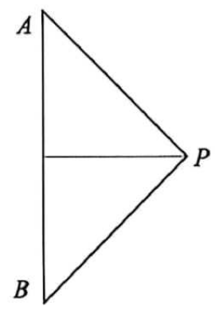
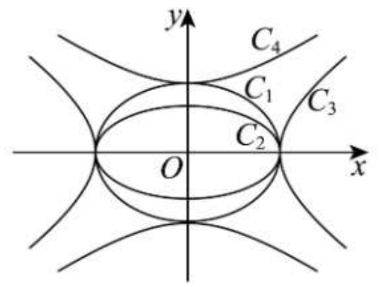
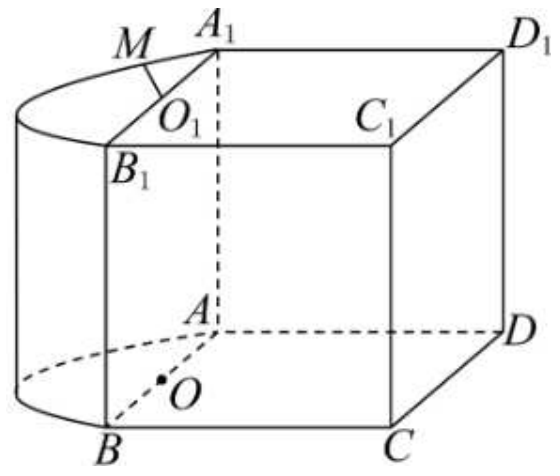
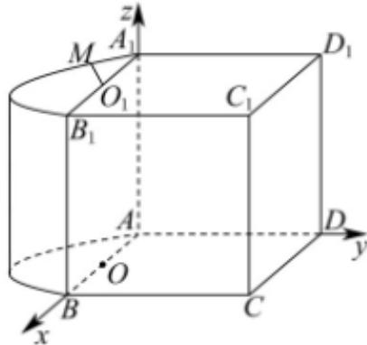
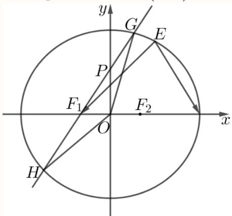

01 【来源：浦东26高三上期末·1】
查看所属专题已知集合 ，，则 ______。
答案与解析
答案
{2,3}
解析
由题意，集合A = {x |x > 1}， B = {1,2,3},
根据集合交集的定义和运算，可得A ∩B = {2,3}.
故答案为：{2,3}.
本题主要考查了集合交集的定义及运算，其中熟记集合交集的定义是解答的关键，属于容易题.
整卷阅读 · 教师版 · 21 题
按来源题号排列；内容来自分类汇编，仍需回源核对。
没有找到匹配题目。
已知集合 ，，则 ______。
{2,3}
由题意，集合A = {x |x > 1}， B = {1,2,3},
根据集合交集的定义和运算，可得A ∩B = {2,3}.
故答案为：{2,3}.
本题主要考查了集合交集的定义及运算，其中熟记集合交集的定义是解答的关键，属于容易题.
函数 的定义域为______。
(-1,+∞)
根据对数函数的定义域列不等式求解即可.
由x+1>0得x>-1,
所以函数 y = lg(x + 1) 的定义域为(−1, +∞).
故答案为：(−1,+∞).
已知向量 ，，若 ，则实数 的值为______。
-3
由平面向量共线的坐标条件，得 ，所以 。
在 的二项展开式中，常数项为______。
20
的展开式通项为 。常数项对应 ，故常数项为 。
已知正数 满足 ，则 的最大值为______。
直接利用基本不等式求解即可.
因为正数a,b满足 ，所以 ，平方化简得
当且仅当 时，等号成立，所以ab的最大值为
故答案为：
设 ，求方程 的解集为______。
[−2,2]
根据绝对值三角不等式求解 的最值，根据取等条件即可得方程的解集.
因为
当且仅当 0时取等，
解得
所以方程 的解集为[-2,2].
故答案为：[-2,2].
中，，，，则 ______。
根据正弦定理以及余弦定理，可得答案.
由题意可得
因为 ，所以
故答案为：
如图，等腰直角 的斜边 长为 ，将 绕斜边 所在直线旋转一周形成的旋转体的体积为______。

旋转体为两个同底等高的圆锥的组合体，利用体积公式求解即可
由题意，将△APB绕斜边AB所在直线旋转一周形成的旋转体是以R为底面半径，R为高的两个共底面圆锥，
所以旋转体的体积为
故答案为：
已知奇函数 的定义域为 ，当 时，，则函数 在 处的导数 ______。
当 时，由奇性 ，故 ，所以 。
已知复数 是实系数一元二次方程的两个根，若 ，则 的最小值为______。
若两根均为实数，由 得 ，此时 。
若为非实根，实系数条件给出 、。
由 得 ，故 时可取实系数方程 ，等号确实达到。
故最小值为 。
某城市交通系统采用数智技术记录城市道路口的信号灯状态，每个时段的信号灯状态对应一个数字（见下表）。
| 信号灯状态 | 正常绿波协调 | 非正常绿波协调：道路施工临时黄灯 | 非正常绿波协调：突发事故临时红灯 |
|---|---|---|---|
| 对应数字 | 0 | 1 |
现需要按顺序记录某个道路口 个时段的信号灯状态，例如，记号 表示 个时段中有 个时段是“非正常绿波协调”状态，分别发生在第 时段。问：该路口 个时段所有可能的记录中，“非正常绿波协调”的时段数不少于 个且不多于 个的记录共有______种。
130
按照“非正常绿波协调”的时段个数进行分类，结合计数原理和组合数知识求解.
按照“非正常绿波协调”的时段个数进行分类，
每类情况均先从5个时段中选取“非正常绿波协调”的时段个数，且因“非正常绿波协调”有两种情况，
则“非正常绿波协调”的时段数1个的记录有 种；
“非正常绿波协调”的时段数2个的记录有 种；
“非正常绿波协调”的时段数3个的记录有 种；
故“非正常绿波协调”的时段数不少于1个且不多于3个的记录共有： 种；
故答案为：130
已知 若等差数列 为无穷数列，且均满足递推关系 ，则该数列首项 的取值范围为______。
设等差数列公差为 ，则对所有 有 。
若 ，后续无限多个互异的 均小于 ，且都满足二次方程 ，不可能。
若 ，常数项满足 。
上分支不可能，下分支解得 （另根 不属于该分支）。
若 ，最终进入 ，此后递推给出 。
所有小于 的项须满足 ，解为 或 ，其中仅 属于下分支。
由于数列严格递增，低于分界点的项只能有一项，即首项 ，且下一项为 。
若首项已不小于 ，当然也满足。
故首项范围为 。
校订说明：补足原解未证明“连续两项在下分支便只能公差为0”的逻辑缺口。
已知直线 和平面 ，且 ，，则“ 与 相交”是“ 与 相交”的（ ）。
A. 充分必要条件 B. 既不充分又不必要条件
C. 充分不必要条件 D. 必要不充分条件
C
按空间位置关系题中 为不同平面的通常约定，若 相交于 ，则 ，所以两平面相交。
反之，两平面相交时，其中的直线可以异面，例如在两个相交平面中分别取与交线平行、且不在交线上的直线。
因此平面相交不必推出两直线相交。
故为充分不必要条件，选C。
某班一次数学小测验（百分制）后，老师为了奖励同学们平时认真学习，决定给每位同学的成绩加上 分作为过程性评价奖励。加分后，与原始分数相比，不会发生改变的是（ ）。
A. 平均数 B. 中位数 C. 第 百分位数 D. 方差
D
所有分数同加5，平均数、中位数和第80百分位数都增加5。每个数与均值的离差不变，故方差不变，选D。
如图，椭圆 的离心率分别为 ，双曲线 的离心率分别为 ，则下列结论正确的是（ ）。

A.
B.
C.
D.
D
椭圆的离心率为 。
图中 长半轴相同，而 短半轴较大，故 。
双曲线的离心率为 。
从图中实轴与共轭半轴的相对尺度可见， 的 大于 ，故 。
综上 ，选D。
已知函数 ，其中 ，。集合 ，其中 ，集合 现有以下两个命题：
①存在实数 ，使得集合 中恰好有 个元素；
②若实数 是方程 的两个不同实根，则存在实数 ，使得集合 中恰好有 个元素。
那么（ ）。
A. ①是真命题，②是真命题
B. ①是假命题，②是假命题
C. ①是真命题，②是假命题
D. ①是假命题，②是真命题
A
先化简 ，六个候选值为
①取 ，则 ，另外四个不同值为 ，所以恰有5个元素，①真。
②令 。
因 ，存在 使 。
取 ，则 ，且由该等式可验证 、。
其余四个数满足 最后一步来自 ，所以恰有4个元素。
令 、，则方程 化为 ，恰以 为两不同正根。
因此②也真，选A。
已知函数 ，其中 。
（1）求函数 的最小正周期及单调减区间。
（2）求函数 ， 的最大值，并求出取得最大值时 的值。
；单调减区间为 ，。
最大值为 ，此时 。
（1）最小正周期 。由 ，得单调减区间 ，。
（2） 给定区间对应 ，故最大值为2，在 时取得。
如图，该几何体由一个棱长为 的正方体 与一个半圆柱拼接而成，圆心 分别为线段 的中点，动点 在弧 上滑动。

（1）若点 为弧 的中点，求直线 与平面 所成角的大小。
（2）若弧 的长度为 ，求证：平面 平面 。
证明见解析
取 ，竖直方向为 轴，则 。
（1）弧中点 ，。
平面 的法向量可取 。
线面角 满足 ，故为 。
（2）圆弧半径为2，弧长 对应圆心角 ，所以 。
由 与 ，知平面 法向量为 ，方程 。
平面 方程为 ，两平面平行且不重合，故所证成立。

小明和小李要进行一系列的比赛，假设每局比赛的结果互不影响。
（1）若比赛没有平局，且小明每局获胜的概率为 。
①如果共有三局比赛，求小明的比赛结果依次为赢、输、赢的概率。
②小明作为实力较弱的一方，他可以优先选择“一局定胜负”或“三局两胜”的赛制（“三局两胜”指先赢两局者为胜，最多三局结束）。请帮助小明分析，选择哪种赛制对他更有利，并说明理由。
（2）如果小明每局获胜的概率为 （），他和小李要进行一场“五局三胜”的比赛（“五局三胜”指先赢三局者为胜，最多五局结束）。记小明最终获胜的概率为 ，请给出 的表达式，判断并说明函数 在 上的单调性，并指出现实意义。
(1)① ②一局定胜负对小明更有利，理由见解析
（1）①各局独立，指定顺序赢、输、赢的概率为 。
②一局获胜概率为 ；三局两胜可分为前两局全胜，或前两局一胜一负且第三局胜，概率为 。因此选一局定胜负更有利。
（2）分别在第3、4、5局获胜的概率为 ，所以 ，故在 严格递增。
现实意义是：每局胜率提高会提高最终赢得五局三胜比赛的概率。
已知椭圆 ，点 为坐标原点，椭圆的右顶点为 ，左右焦点分别为 ，点 为椭圆在 轴上方的一动点。
（1）求椭圆 的焦距与 的周长。
（2）若 ，求点 到 轴的距离。
（3）过点 作斜率为 的直线 交 轴正半轴于点 ，点 位于椭圆内。直线 与椭圆 交于 两点，记 的面积分别为 ，求 的取值范围。
焦距为2, 的周长8;
（1），所以焦距为2，焦点三角形周长为 。
（2）设 。
代入数量积与椭圆方程得 ，即 。
两根为 ，后者在椭圆外，故 ，到横轴距离为 。
（3）令 ，则 ，点P的条件为 。
联立椭圆得 ，因此 由面积行列式，，，所以比值为 。
令 ，根号内函数 的导数为 故比值严格递增； 时趋于 ， 时趋于6，均不取端点。
所求范围为 。

已知函数 的定义域为 。若对任意区间 ，存在正整数 ，使得 ，则称函数 为“回归函数”， 为回归指数。其中 ，，，，。
（1）若 ，，请分别判断函数 、 是否为回归指数为 的“回归函数”。
（2）若 ，。求证：函数 是“回归函数”，并求满足条件的回归指数 的最小值。
（3）若 是定义域为 的函数，且 其中 。请判断函数 是否为“回归函数”？若是，请写出证明过程；若不是，请说明理由。
（1） 是， 不是；（2）最小统一回归指数为 ；（3）按通常的正长度区间理解，是回归函数，证明见解析。
（1） 的二次迭代为 ，所以任意非空区间 满足 。
而 的二次迭代为 ，取 有 ，与 不相交。
故前者是回归指数为2的回归函数，后者不是。
（2）在指定定义域上，依次计算 定义域在这些变换下保持不变，所以 ，回归指数4适用。对 ， 三者均与 不相交，故可统一适用的最小回归指数为4。
（3）原题第二分支为 ，故 已由题设确定。
以下按通常的正长度非空区间解释“区间”。
定义两支逆映射 、（）。
它们分别将 映到 和 ，且 为恒等映射。
对任意长度为 的0、1序列 ，令 。
这些半开区间分割 ，且 。
令 ，则每个 的长度不超过 。
任给正长度区间 ，在其内部取一点并取足够大的 ，使分割网格足够细，便有完整的某个区间 。
因此 从而 。
在上述约定下，它是回归函数。
校订说明：原解把该函数误称连续，并断言跨分支迭代后的长度持续增大；该论证无效，已改用逆分支分割证明。若允许单点区间，第(3)问结论并不普遍成立（例如a=1/2时取非周期点的单点），须明确“区间”的含义。